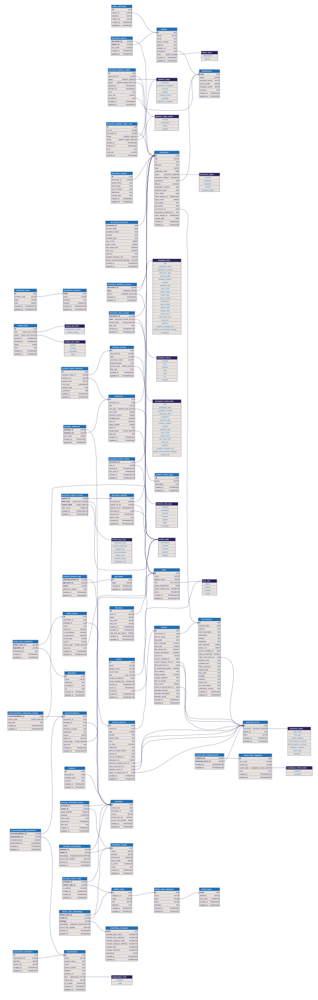

CHIRP Maritime · CHIRPdb
CHIRPdb takes published maritime accident investigation reports (PDF documents) and turns them into structured, searchable data. This page explains what the database holds, how the pieces fit together, how a reviewer's judgement is kept apart from the machine's and the principles that keep the data trustworthy. Updated October 2026.
Every report goes through the same six stages, in order, and the database is organised around them. Each stage records whether it ran, succeeded, failed or was skipped, and what it cost, so the state of any report is always visible. A stage that fails never stops the ones after it.
Which body published the report: the UK's Marine Accident Investigation Branch, the US National Transportation Safety Board. Decided first, from the PDF's own properties and cover, because it sets the conventions every later stage reads the report under.
A vision model reads every page image and writes out the full text, sentence by sentence in reading order, with headings kept. Pages it struggles with are read again; a report that still lands with gaps is marked degraded rather than lost.
The report's particulars: title, publication date and number, document type and the accident facts the report itself states. Each value is read from the publisher's web page, the PDF's properties, its cover or the text, and the source of every value is recorded.
The safety issues and recommendations the report makes, found from its own headings and wording. Each is kept as the exact sentences it spans, never as a paraphrase.
The vessels, people, organisations, places and equipment the narrative names, with every mention located in the text, so "the Master" and "Captain Smith" resolve to one person.
The report is matched by its publication number to MAIB's own record of the accident from the MAIB Data Portal, where one exists, so the report and the investigators' structured data sit side by side.
Beside the six stages, the database keeps a numerical fingerprint (an embedding) of every passage that carries a finding, refreshed by the database itself whenever the passage's text changes. That is what lets a reader ask "find recommendations like this one" and get an answer ranked by meaning rather than by shared words.
Each report carries a status, so you always know how far it has progressed and how much to trust its data:
Extracted means the pipeline has finished and nobody has signed the report off yet; its findings are the machine's proposals. Verified means a named reviewer has signed it off, and is the status a reader whose access is limited to verified documents relies on. An administrator can return a verified report to extracted, with a note saying why. A report whose extraction could not complete is kept as Extraction failed and never lost; one that completed with gaps is marked degraded so reviewers read it more carefully against the PDF. The five later stages each keep their own status beside the document's, so a report can be extracted and still show that, say, its entities stage failed.
This is the complete entity-relationship diagram: every table in the main part of the database and every connection between them (the audit trail has its own diagram). It is dense by design; the sections that follow break it into readable pieces.

The factual record. Each report, the body that published it and the investigators who wrote it, the report's own account of the accident (date, location, severity, type, lives lost, injuries, whether the vessel sank, pollution, damage and the vessels it names) and a stored copy of the PDF itself, served only through the system.
Beside the reports sits the investigators' own structured record: every incident in the MAIB Data Portal, with the vessels involved, the people affected aboard each and the protective equipment they wore or lacked. A report is linked to its incident by publication number, so the two descriptions of one accident can be read together. The link is itself something a reviewer confirms or clears.
The full text of every report, stored sentence by sentence in original reading order, with headings preserved. Consecutive sentences are grouped into passages, and every person, vessel, organisation, place or piece of equipment named in the narrative is recognised and recorded, including when the same thing is referred to in different ways ("the Master", "Captain Smith").
What the analysis extracts and what reviewers decide about it: safety issues, recommendations and the organisations each is directed at, SHIELD causal-factor codes and, on every one of these items, its review state. The same area records who is working on a document, and the sign-off that makes a document verified, with a count of how many items stood in each state at that moment.
Information many reports point at but none owns: the SHIELD taxonomy, the legislation safety issues cite, the organisations recommendations are addressed to, the kinds of entity the narrative can name, and the three vocabularies that make reports comparable: vessel type, accident type and severity. Stored once and referenced everywhere, so "all recommendations directed at organisation X" is one question, not a search through every report.
A numerical fingerprint of every passage that carries a finding, and of every SHIELD code, produced by a named model. Each fingerprint records exactly which text it was made from, so a stale one cannot exist: when a passage's text changes, the database itself queues it to be refreshed and drops the old fingerprint.
Who may use the system and what they may do. Every account holds one of four roles (reader, reviewer, analyst, administrator), and a reader's account can be limited to particular jurisdictions or to verified documents only. Accounts start as an invitation; passwords are never stored here, and keys for automated access are stored only as a fingerprint.
A separate part of the database whose only job is to be true about the past. Every review decision, correction, sign-off and sign-in is recorded with who, when, what for and the value before and after. Nothing in it is ever edited or deleted, and it outlives the reports and accounts it describes. How review works explains the workflow and the trail in full.
Four kinds of finding come out of the analysis. They all share one
anchor: the passage, a group of consecutive sentences
(the passages table). A passage is its sentences:
its text is derived from them by the database, and a passage with no
sentences left is removed, along with any finding that hung from it.
Whatever the finding, you can follow it back to the passage, and from
the passage to the exact sentences of the original report.
The most general finding: a typed note about a passage, such as a summary, an interpretation or a classification. Each note records what kind of analysis it is and its content, so different analytical passes can sit side by side on the same text without interfering.
SHIELD is the taxonomy of human and organisational factors in maritime incidents that CHIRP works with. It is seeded into the database as reference data: 113 codes in 24 categories under four layers, each tier carrying its own code and definition from the published taxonomy. Because the codes are a controlled vocabulary rather than free text, "how many incidents involved fatigue?" is a count, not a judgement call. The layers run from the sharp end downwards.
5 categories · 19 codes
12 categories · 62 codes
3 categories · 15 codes
4 categories · 17 codes
Each code has a short identifier, a title and a full definition, for example PPC2Fatigue: "diminished mental capability due to fatigue, restricted or shortened sleep… degrades operator performance." The database also holds a fingerprint of every code, so that the nearest codes to any passage can be looked up. A match is only ever a suggestion: nothing tags a passage without a person.
A hazard the report identifies. Its words are the sentences of its passage; a reviewer may add a name for it, so that the same kind of issue can be grouped across reports, and may record whether it was contributory to the accident and whether the report says it was addressed. Each safety issue carries a review state (below) and can be linked to the legislation it bears on. The legislation register is shared reference data, so every issue citing the same regulation points at the same record.
safety_issue_legislation) also stores the passage of
text that made the connection, so the citation itself is traceable.
The actions a report calls for. Each recommendation is the sentences the report wrote it in, with its reference number and the addressee as the report worded it. A reviewer may add a summary of the action and attaches the organisations it is directed at from the shared register. Because one recommendation can address several organisations, and each may act on it at a different time, implementation is tracked per organisation, with the date stamped automatically when it is marked implemented. The list of organisations is reviewed as an item in its own right, separately from the recommendation.
recommendation_organisations)
carries is_implemented and implemented_at,
so "which recommendations to organisation X are still open?" is a
direct query. One name resolves to one organisation: spellings the
corpus uses for the same body are recorded against it, so the next
report that names it lands on the same row.
Beyond findings, the analysis tracks who and what each report is about. A typical report mentions a master, a chief officer, one or more named vessels, an operating company, a port, specific equipment. The narrative entity model records each of these as a first-class thing rather than words in a sentence, so questions like "every report involving this vessel" or "every sentence that mentions the chief engineer" become directly answerable.
Entity types are a controlled vocabulary, seeded into the database. New
types can be added by inserting a row, with no engineering work, but
the analysis can only ever use types from this list, which keeps the
data countable and consistent. One type, other, is an
escape hatch: an entity filed there must say what kind of thing it
is, and the review tool shows such entities first so a person can
settle them.
| Type | What it covers |
|---|---|
| person | An individual: master, chief officer, pilot, crew member |
| group_of_people | A collective acting or referred to as one unit: "the crew", "owners and operators" |
| vessel | A ship or vessel: a named ship or a vessel class reference |
| organisation | A body: port authority, flag state, operator, classification society |
| location | Geographic (port, anchorage, waterway, country) or shipboard (bridge, engine room, deck) |
| equipment | Equipment, instruments or systems: life jacket, radar, VHF radio, fire suppression system |
| cargo_or_substance | Cargo, catch, fuel, gas or another physical substance the vessel carries or that plays a part in the narrative |
| event | The accident itself: the collision, grounding, fire or casualty |
| condition | A physical or environmental state the narrative turns on: weather, sea, stability, tide, atmosphere, the vessel's condition. A condition holds; an event happens |
| procedure | Passage plan, risk assessment, watch, inspection or survey |
| document | Guidance, report, manual, code of practice or checklist |
| legislation | SOLAS, Marine Guidance Notes, the US Code of Federal Regulations and equivalent statutory or regulatory instruments |
| time | Clock-time mentions |
| other | A candidate the list has no home for, with the kind of thing it is recorded alongside |
The model separates the thing from the places it appears. An entity is one real-world thing within a report, with a single canonical name. A mention is one occurrence of it in one sentence, recording the exact words used and precisely where in the sentence they sit (the character positions), how the mention refers to the entity (by name, by description, by pronoun) and how confident the extractor was. That is what lets "the Master", "Captain Smith" and "he" all resolve to the same person while every individual reference stays findable. An entity exists only while at least one mention backs it.
person, with two
mentions: "The Master" and "Captain Smith", each stored with its
exact character positions in the sentence.
vessel, with one mention.
The schema follows a database standard called Third Normal Form: each piece of information lives in exactly one place, and everything else refers to it. No copies drifting out of date: correct an organisation's name once and every recommendation addressed to it reflects it. In the few cases where a value is deliberately duplicated for speed, the database itself enforces that the copies always agree.
Classifications come from managed lists: SHIELD codes, entity types and one list each for vessel type, accident type and severity whichever body published the report. The words a report used are kept as it wrote them and resolve to the list by a mapping a person has approved, so "Fatigue" is always the same code and "tug" is always the same vessel type, and counting across reports works.
Rules live in the database itself, not just in the application. A passage's text is derived from its sentences; a finding whose source text is gone goes with it; a change to an item is accepted only if the item is still as the person last saw it, so two reviewers can never silently overwrite each other. Nothing depends on software remembering to do the right thing.
Everything the pipeline produces starts unreviewed. A reviewer's decision moves each item to accepted, corrected, rejected or flagged, and a document becomes verified only when a named reviewer signs it off. A reviewer's edit survives any later pipeline run, and a document holding decisions cannot be re-run or deleted without an administrator forcing it, with a reason that is recorded.
Every decision, correction, sign-off and sign-in writes an entry in the audit trail, in the same transaction as the change itself, with the value before and after. The trail is never edited or deleted, and an entry outlives the report and the account it names. The machine's original value is always one step back in the history. How review works covers this in detail.